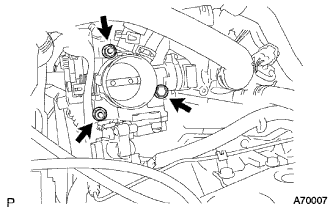

オイルレベルゲージをオイルフイラチユーブから取りはずす。
ブリーザホースをオイルフイラチユーブから取りはずす。
 |
ボルト2本をはずし、オイルクーラーチユーブクランプおよびオイルフイラチユーブをトランスアクスルASSYから取り外す。
Oリングをオイルフイラチユーブから取りはずす。
スロットル ボデーASSY 取り外し |
| 1. 冷却液(トヨタ純正スーパーLLC)抜き取り |
ラジエータキヤツプを開ける。
ラジエータドレーンコツクプラグをゆるめ冷却液を抜き取る。
| 2. フューエルベーパフィード ホース NO.1切り離し |
スロツトルボデーASSYからフユーエルベーパフイードホースNo.1を切り離す。
クランプのかん合をはずし、フューエルベーパフィードホースNo.1をエアークリーナーキャップから切り離す。
| 3. エア クリーナASSY取りはずし |
エアクリーナキヤツプとエアクリーナホースNo.1を取りはずす。
エアクリーナフイルタエレメントを取りはずす。
ボルト4本をはずし、エアクリーナケースとエアクリーナインレツトNo.1およびエアクリーナインレツトNo.2を取りはずす。
| 4. トランスミッションオイルフィラ チューブSUB-ASSY取りはずし |
オイルレベルゲージをオイルフイラチユーブから取りはずす。
ブリーザホースをオイルフイラチユーブから取りはずす。
|
ボルト2本をはずし、オイルクーラーチユーブクランプおよびオイルフイラチユーブをトランスアクスルASSYから取り外す。
Oリングをオイルフイラチユーブから取りはずす。
| 5. アクセルレータ コントロールケーブルASSY切り離し |
ナットを緩めてアクセルレータコントロールケーブルASSYをアクセルレータコントロールケーブルブラケツトから切り離す。
| 6. ウォータバイパス ホース切り離し |
| 7. ウォータバイパス ホース NO.2切り離し |
| 8. スロットル ボデーASSY取りはずし |
スロツトルポジシヨンセンサおよびアイドルスピードコントロールバルブのコネクタを切り離す。
|  |
ボルトおよびナット2個をはずし、アクセルレータコントロールケーブルブラケツトおよびスロツトルボデーASSYを取りはずす。
インテークマニホルドよりガスケツトを取りはずす。